신선한 야채나 과일이 연상되는 색으로, 밝은 녹색은 신선함
때문에 상큼한 맛을 느낄 수 있다. 녹색을 잘 이용하면 준이
편안한 디자인을 할 수 있고 안정감을 줄 수 있다.
1. 색의 성격오랜 시간 만들어진 색상이 가지고 있는 성격 :
풍부한 감정, 강한 신념, 소극적, 약한 추진력, 집착력,
학구적, 이론적, 강한 질투
2. 색의 영향사람이 인지했을 때 느낌 :
평화, 자연 환경, 건강, 상쾌, 불안감 해소, 젊음,
안정, 희망, 휴식
3. 색의 처방색상을 의도적으로 활용할 수 있는 방법 :
스트레스 해소, 눈의 피로 회복, 정신 집중
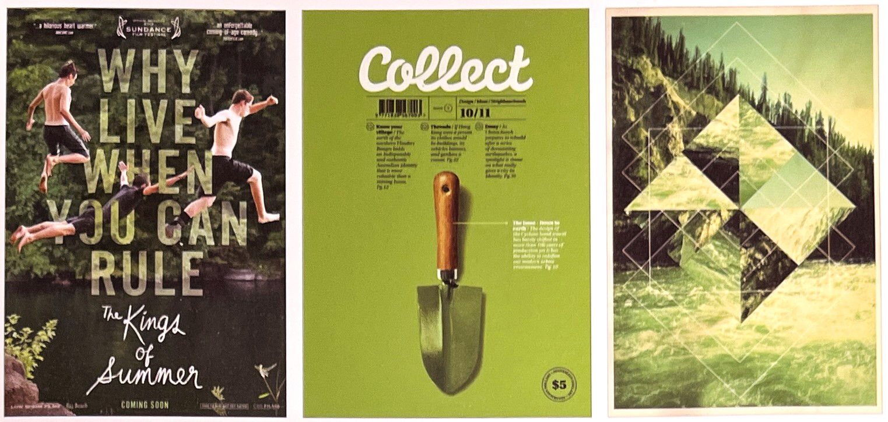
* King of Summer 영화 포스터 여름을 주제로한 영화 포스터로 젊고 역동적인 영화의 이미지를 전달한다.
** 매건진 Collect-FFFFOUND 자연의 소재가 하나도 표현되지 않았지만 모종삽이라는 개체와 녹색 배경으로 자연이라는 주제가 느껴진다.
*** Geo-Legan Rooster 녹색은 자연과 가장 어울리는 색이다.
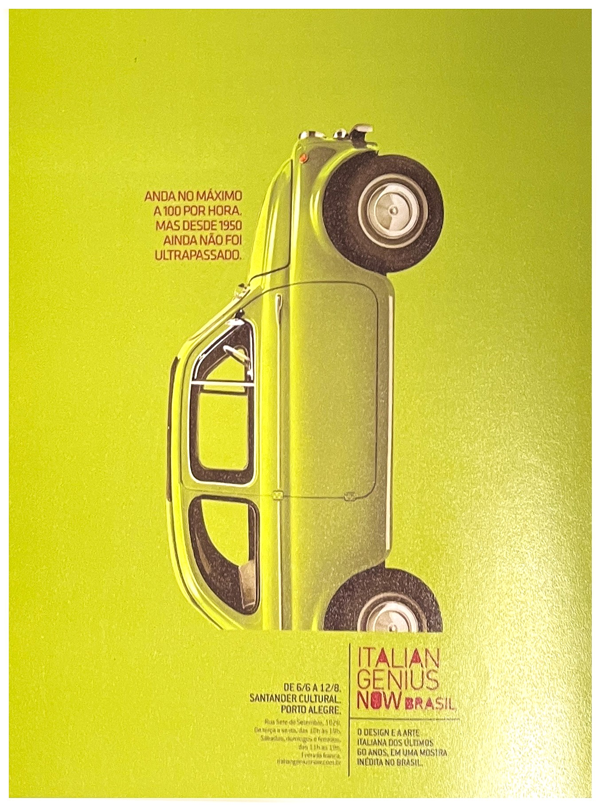녹새으로 인해 신선함이 느껴지며 약간의 빨간색이 시각적 흥미를 더하고 있습니다.
초록색의 상징[4]
긍정적 감정과 상징:
자연, 성장, 희망, 젊음, 건강, 돈, 친환경
부정적 감정과 상징:
병약, 질투, 마술, 마법, 악마, 독약
연상되는 자연/자연물:
봄, 라임, 나뭇잎
정치.종교적 상징:
이슬람, 공화국, 민족주의, 성패트릭 데이
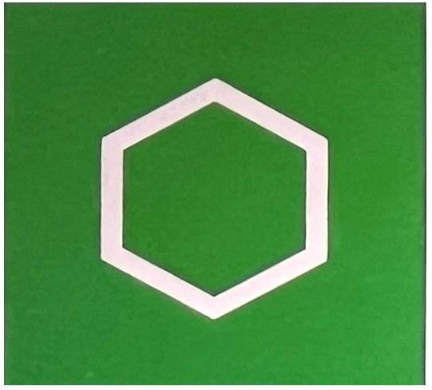
초록색의 심볼육각형[6]
초록색(Green)우리가 원색이라고 하는 노랑과 파랑이 혼합되어 최초로 나타나는 색상이 초록이다. 노랑과 파랑이 동등하게 혼합해 나타난 색상이다. 여기서 우리 눈은 현실적인 만족감을 얻는다. 두 원색이 정확히 균등하게 섞이면, 우리 눈과 기분은 편안해 진다. 사람들은 그 이상을 원하지도 바라지도 않는다. 괴테Johann Wolfgang von Goethe의 '색채론'에서
초록은 자연에서 가장 많이 접할 수 있는 색으로 시각적, 심리적으로 안정감을 주고 피로감을 덜어 준다고 한다. 영어에서 초록을 의미하는 green은 '자라나다'의 의미인 'growan'에서 유래되었다. 초록은 주로 식물이나 바다를 나타내고, 미숙한, 시기하는, 아픈 사람을 묘사한데 사용되기도 한다. 또한 초록은 교통표시에서 안전을 의미하고 있다.[4]
돈, 경험 부족, 천국, 질투, 재활용 선호, 원예솜씨. 이 모든 것들이 우리가 초록으로 인식하는 색상과 연관이 있다. 아니, 초록색은 우리가 생각하는 것보다 더 본질적이다. 우리가 아마존 정글에서부터 콘크리트 정글까지 다양한 환경에서 살아 숨 쉴 수 있는 것도 푸르른 자연 덕분 아닌가. 우리를 둘러싼 이러한 녹색을 담당하는 색소가 바로 엽록소로, 학명은 클로필Chlorophyll이다. 클로로필은 일견 과학 용어로 보이지만 실제로는 녹색이나 나뭇잎을 뜻하는 그리스어에서 유래되었다. 엽록소가 인간의 생존에 필수적인 산소를 생성하는 역할도 한다는 점을 감안하면 녹색은 우리 삶에 필요불가결한 요소라고 할 수 있다.[1]
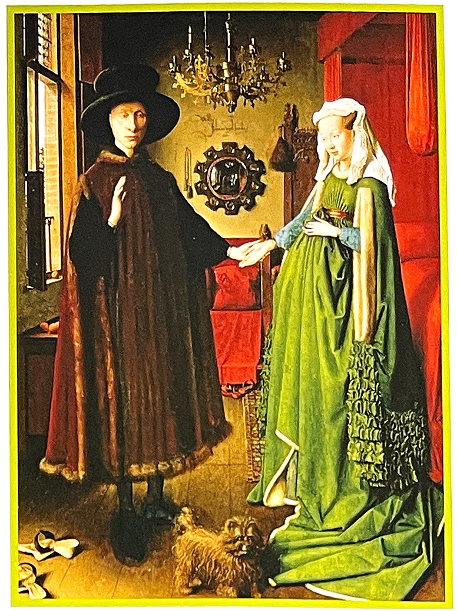얀반 예이크Jan van Eyck의 [아르놀피니의 결혼] Arnolfini Marriage1434년, 회화 역사상 푸른 녹을 가장 인상적으로활용한 예라고 할 수 있다.
문명, 종교 그리고 자연 세계의 상호작용은 이슬람교에서 매우 분명하게 드러난다. 회교도 사원의 녹색 지붕은 많은 이슬람 국가의 녹색 국기와 함께 이슬람교와 녹새 간의 특별한 관계를 보여준다. 회교도들에게 있어 녹색은 기본적으로 천국, 부활, 그리고 선지자 마호메트와 연관되어 있다.[1]
또한 이슬람 세계에서 파라다이스라는 단어는 '정원'을 의미한다. 본래 고대 페르시아와 그리스, 또는 아랍어에서 유래된 말이긴 하지만 꽤나 상징적이다. 또한 코란은 천국에서 입는 녹색 예복, 그리고 영원한 정원에 비치된 녹색 비단 침상을 가리킨다. 앞서 다룬 식물계와 연관시키자면 코란에는 사막에도 강수가 내려 세계가 갑작스럽게 녹색화된다는 표현이 여러 번 등장한다. 또한 부활은 강수가 내려 땅 전체에 새로운 새싹이 싹트기 전까지는 알 수 없는 가능성의 씨앗으로 상징화된다.[1]
이렇듯 녹색이 지배적인 것은 선지자 마호메트 덕분인데, 그는 평소 녹색이나 흰색 또는 녹색과 흰색이 혼합된 옷을 즐겨 입었다.[1]
또한 중세 이슬람의 시에서도 녹색을 찾아볼 수 있다. 가령 천국에 있는 산으로 묘사된 카프Caf산 역시 녹새을 띠는 것으로 묘사되었다. 하늘 역시 마찬가지였는데 일부는 카프 산이 반사된 것이라고 한다. 심지어 물조차 녹색으로 묘사 되었다. 위대한 수피교는 시인 루미Rumi는 다음과 같이 표현했다.[1]
Everyone taliks about greenery (누구나 녹색을 말한다) not with words(단지 언어로만이 아니라) but quietly, as green itself(녹색이 그 내부로부터) talks from inside(조용히 자신을 대변한다) as we begin to live our love(우리가 사랑으로 살기 시작할 때) 안으로부터의 녹색Green from inside 콜만 바크스Coleman Barks의 루미 빅 레드 북Rumi; the Big Red Book

이란, 방글라데시, 파키스탄, 사우디아라비아, 팔레스타인, 투르크메니스탄의 국기. 모두 녹색이 포함되어 있다.
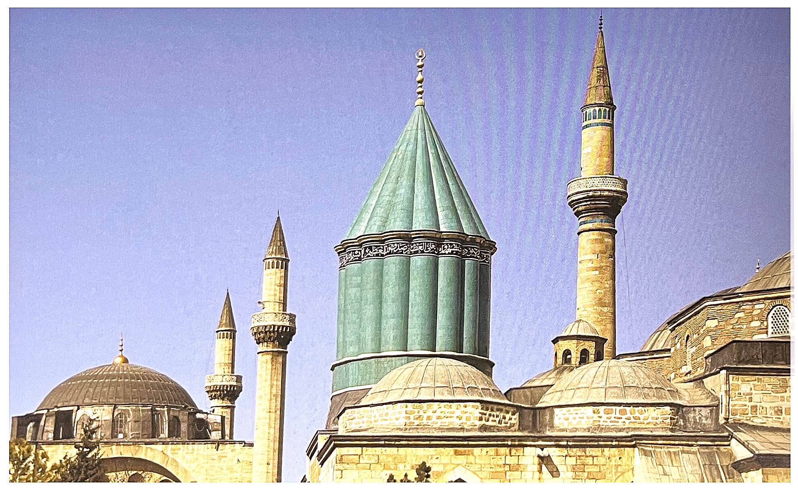13세기 수피교도 시인 루미는 터키의 코냐 지방에 있는 일명 그린 돔The Green Dome이라는 아름다운 무덤에 매장되어 있다.
초록색의 역사[3]초록은 생태계 피라미드의 가장 아래에 있어 우리가 먹는 모든 음식이 식물이 없으면 존재할 수 없는 것이다. 식물은 물리적인 효용뿐 아니라 삶의 마음을 안정시켜주는 힘도 지니고 있다.
그리스도교에선 푸른 졸려나무 잎이 영원한 생명의 상징으로서 구원자 예수를 대변한다. 이슬람교에서도 초록 깃발이 에언자를 나타내는 중요한 표식이다. 사막에서 목이 마른 채로 헤맬 때 지평선에 보이는 초록 식물과 오아시스, 초록의 의미는 바로 이런 것이다.
용감했던 바이킹족들은 얼음으로 이뤄진 섬에서 희망찬 생활을 했다. 이 섬은 훗날 그린란드Greenland,초록나라로 불린다.
희망을 뜻하는 초록의 의미는 독일 문화권에서도 발견 가능하다. 사시사철 푸른 크리스마스트리를 거실에 꾸며 놓는 풍습부터가 그렇다. 이는 그리스도교가 도입되기 이전 다신교 사회에서부터 존재했던 문화다. 독일에서는 요즘 초록 식물을 보호하고 번창시키는 데 각개각층이 동참하고 있다. 독일에는 녹색당Die Gruene이란 정당도 존재한다.
고대 팔레스티나(예루살렘)에선 결혼식 때 신부가 행복한 삶과 다산을 기원하는 뜻에서 초록 드레스를 입었다. 모계사회 시대에서는 여성적인 색상인 파랑과 마찬가지로 초록도 사회적 조건에 영향을 미쳤다.
주로 음력에 맞쳐 살던 동양에서도 예전부터 초록을 달의 색이라고 표현했다. 이들은 달이 물(썰물과 밀물)과 식물성장에 영향을 미친다고 믿었다. 때문에 달, 물, 식물의 작용은 밀접하게 연관되어 있다고 인식했고, 초록을 통한 생명 사랑biophile의 원칙도 세웠다.
점성술에서는 처녀자리와 물병자리를 초록에 비유한다. 사랑의 신을 상징하는 금성과 바다의 신을 뜻하는 해왕성 역시 마찬가지로 초록 이미지다. 그것은 그리스에서 거품에서 태어난 아프로디테와 포세이돈을 통해 구체화되었다. 이러한 이미지는 여성적 미와의 조화, 사랑, 혹은 사랑과 관련있는 모든 것을 상징하는 비너스의 성격이기도 하다.
이스람교에서 예언자 모하메드는 초록 에복으로 '희망의 원칙'을 드러냈고 초록 깃발을 앞세워 전쟁을 독려했다. 그 여파로 오늘날 이 슬람권에서도 초록은 성스러운 색으로 통한다. 녹색이 내부공간을 장식하는 데 있어 선호되는 이유다. 리비아의 혁명 지도자인 모하메드 가다피Mohammad chaddafi의 '초록책'에도 신성한 색으로서의 초록 이미지가 반영되었다.
그리스도교에서 초록은 봄의 색으로서 부활과 영생의 희망을 의미한다. 그 뜻은 확장되어 천국을 갈망하는 꿈을 가리키기도 한다. 여기서 천국은 신의 자비가 영원히 함께 하는 공간이다. 초록은 구약성서에서도 정의를 상징하며 성령에 의한 굳건한 믿음 혹은 그 믿음이 충만한 삶을 나타내는 색으로 통한다.
그리스도교 내부에 그려진 성화에도 비슷한 초록 이미지가 보인다. 요하의 망토, 성녀 바바라 대로는 마리아의 복장에서도 발견된다. 최후의 만찬을 표현하는 데도 초록이 보인다.
켈트인들은 1월 1일, 행복을 가져다 주는 축복의 신들이 아일랜드 해안(초록의 섬)에 도착했다고 믿었다. 이 신들은 사람들에게 지식과 문화를 가져다 주려고 접근한 존재들이다.
클로버 주에서도 네잎 믈로버는 자연에서 찾아 내는 것 자체가 행운으로 통했다. 사실 네잎 클로버의 상징이 지나온 역사는 인간사 만큼이나 오래된 것으로 보인다. 한 전설에 의하면 '이브가 낙원에서 추방될 때 아담과의 행복했던 시간을 떠올리기 위해 초록의 네잎 클로버를 따 가지고 갔다.' 고 전해진다.
유감스럽게도 아담과 이브는 낙원에서 처음 맛 본 사과 때문에 추방되었다. 이들은 일반 과실수가 아닌 '선악을 알게 하는 나무'에서난 열매를 먹었다. 그래서 나체인 사실을 부끄러워했더 것이다. 아쉽게도 아담과 이브는 영원한 '생명의 나무'를 단지 시식해보는 데 그쳤다. 이들은 영생하지 못하고 생명의 순환, 흙에서 태어나 흙으로돌아가는 신세가 되었다.
매우 푸른 녹[1]자유의 여신상, 오래된 동전, 빈에 있는 호프부르크 왕궁, 모두가 청록색 녹청을 사용한다. 이 녹청은 구리, 청동, 기타 유사 금속이 산소, 물, 이산화탄소 또는 황에 노출되면서 발생하는 아름다운 물질이다. 먼저 화학 반응을 통해 탄산동이 생성되는데, 이 탄산동은 녹색 광물인 말라카이트malachite와 상당히 유사한 선명한 녹색을 띤다.
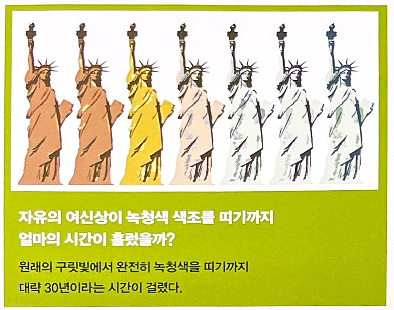 녹색 죽음[1]18세기 프랑스 화학자 조제프 프루스트Joseph Proust는 탄산동에 대한 연구를 하여 현대 화학의 추세를 바꾸었다. 이 무렵에는 장식적인 효과가 있으면서 동시에 위험한 또 다른 녹색이 잘 꾸며진 집안에 정착하기 시작했다.
셀레 그린Scheele's Green, 즉 이전에 퇴색하지 않는 색으로 염색했을 때는 얻을 수 없었던 황록색을 발견한데서 시작되었다. 문제는 이 셀레 그린이 비소(몇 가지 동소체 형태를 이ㅏ루는 맹독의 반금속 원소)로 만들어졌다는 것이다. 이 독성 물질의 아주 미세한 입자들은 건조한 상태에서 공기 중에 떠다녔는데 설상가상으로 습한 상태가 되면 상황이 더욱 악화되었따. 이 염료가 곰팡이를 형성하여 공기 중에 다량의 비소를 배출하면서 마늘 향수나 '쥐' 냄새로 묘사되는 고약한 냄새를 풍겼던 것이다.
그 후 1814년 에메랄드 그린이 출시되자 이 벍은 금속성 색조는 똑같이 비소가 가미된 셀레 그린보다 훨씬 많은 인기를 누리며 오늘날까지도 널리 상받게 되었다. 이 색상은 더 밝고 더 오래가서 제약이나 제과는 물론 거실의 벽지나 드레스 천, 양초의 밀랍에 사용되었으며 성능좋은 쥐약의 재료가 되기도 했다.
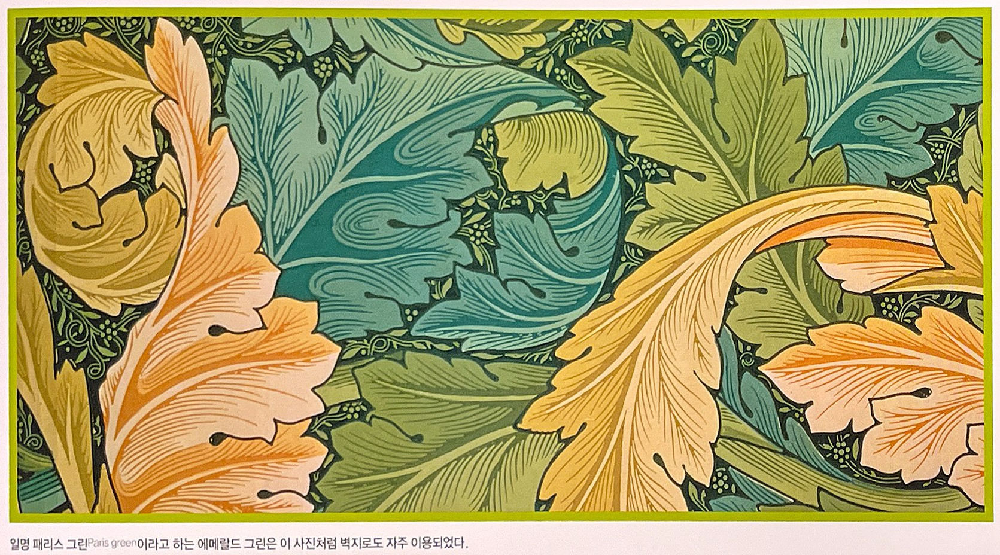일명 패리스 그린Paris Green이라고 하는 에머랄드 그린은 이 사진 처럼 벽지로도 자주 이용되었다.
녹색 뮤즈[1]빈센트 반 고흐, 마크 트웨인, 어니스트 헤밍웨이, 폴 고갱, 에드가르 드가, 에두아르 마네, 기 드 모파상, 파블로 피카소, 에드거 앨런 포, 앙리 드 툴루즈 로트레크, 오스카 와일드, 심지어 테오도어 루스벨트까지 모두 적어도 한 가지 공통점을 가지고 있었다고 한다. 삶의 어느 순간엔가 '그린 뮤즈'를 한 잔 또는 여러 잔 마셨다는 것이다. 그린 뮤즈는 결코 은유적인 표현이 아니라 전 세계를 뒤흔든 압생트Absinthe라는 아주 독한 술이었다.
'녹색 요정' 또는 단순히 '그린'이라고 불리는 압생트는 고대에 의학적 용도로 사용되었을 즈음에는 술이나 숙취와 전혀 무관하게 사용되었다. 고대 그리스, 이집트, 로마인들은 여기에 비소, 회향(향이 강한 채소)그리고 약쑥(경우에 따라 다른 약초)를 섞어 소독제, 벌레 물린데 바른 약, 방충제 등으로 사용했다. 하지만 18세기 말, 압생트는 유흥을 위한 마실 거리의 원조로 자리 잡게 되었다.
이렇듯 압생트가 주류로 자리 잡게 된 또 다른 이유로는 말라리아가 있다. 아프리카로 원정을 간 프랑스 군인들에게는 질병을 완화해 주는 음료가 제공되었는데, 많은 군인들이 곧 이 음료의 달작지근한 감초 맛과 알딸딸해지는 알코홀에 반하고 말았다. 그 후 압생트는 약용재료에서 일종의 친목 도모제로 빠르게 전환되었다.
압생트의 녹색은 뒤섞인 식물 잎에서 배출된 엽록소에서 비롯되었다. 이 혼합물에 물과 설탕을 넣고 양조 과정을 거쳤다. 이렇듯 극단적인 반응이 일어나자 1907년 스위스에서는 압생트를 위험 물질로 간주하여 금지하기도 했다. 그 후 프랑스에서도 잇달아 이 인기 많은 음료를 금지하기에 이르렀다.
압생트가 다시 등장한 것은 1980년대에 들어서였다. 이 음료에 대한 화학자들의 연구 결과 환각 현상의 실제 원인은 단순히 숙취에 위한 것이라는 사실이 분명해졌기 때문이다. 그렇다 해도 일부 저가의 압생트 양조업체는 비용을 절감하기 위해 양조 과정에서 압생트의 천연 녹색을 제거하고 이를 동염(銅鹽, 구리염)으로 만들어진 식품 착색체로 대체했다.
이러한 소금에는 독성이 있었으며 많은 사람들이 경험한 것으로 보고한 광기의 원인이 되었을 수도 있다. 그럼에도 압생트는 누명을 벗자마자 다시금 유행하게 되었다.
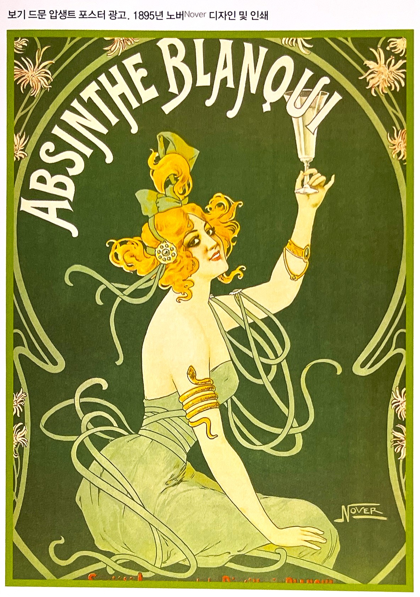보기 드문 압생트 포스트 광고 1895년 노버Nover 디자인 및 인쇄
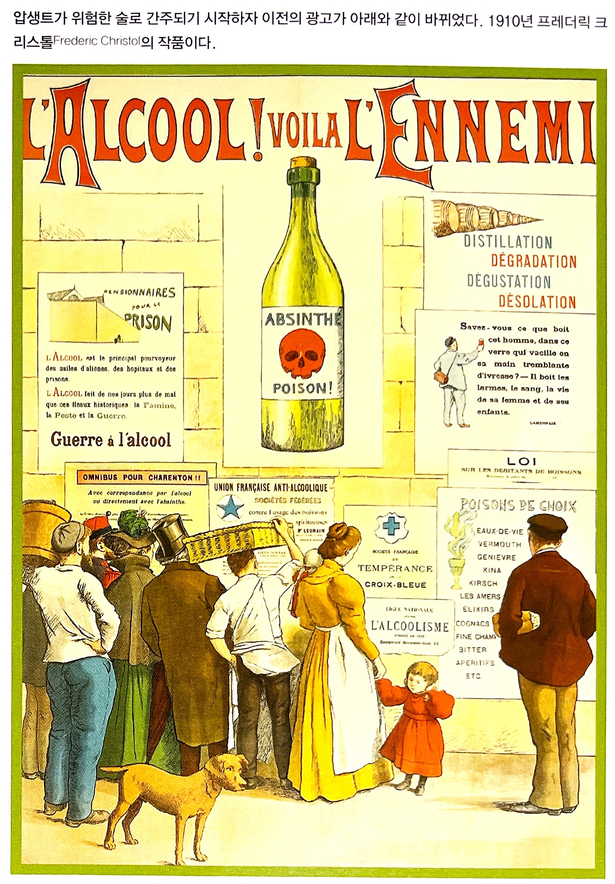압생트가 위험한 술로 간주되자 이전의 광고가 그림과 같이 바뀌었다. 10년 프레데릭 리스톨Frederic Christol 의 작품이다.
초록색의 심리학[2]완전한 초록은 가장 순수한 색으로서 흔들림이 없다. 기쁨, 슬픔, 열정이란 감정에 어떤 불협화음도 내지 않는다. 아무것도 요구하지 않을뿐아니라, 스스로 만족해 머무르는 색이 바로 초록이다. 귾임없는 부동성을 지닌 초록은 피로에 지친 인간의 영혼에 휴식을 제공한다. 하지만 이렇게 휴식을 취한 인간은 쉽게 지루해 한다. 완전한 초록은 오히혀 그래서 수동적인 특징을 포함하는 색상이기도 하다. 바실리 칸딘스키Wassily Kandinsky
색채연구가들은 사춘기 청소년들이 순수한 초록에 강한 애착을 보이면서도 파스텔 계열의 녹색을 좋아하지 않는다고 밝힌다. 프릴링Frieling에 의하면 이런 특성은 청소년드이 인격을 형성하는데 지대한 영향을 준다고 한다. 초록은 모든 육체적인 감성을 억누른다. 확고한 의지와 높은 수준의 가치를 우리에게 요구한다.[3]
녹색은 노란색과 파란색 사이에 위치한 색상이다. 스펙트럼에서 다리이자 통로 역할을 하며, 신체에서 심장이 하는 역할과 흡사하다. 이 사람들은 이상주의자로서, 사회적 양심이 강하며, 균형, 조화, 인정, 확고한 생활방식을 추구하려고 하는 특성이 있다. 이들의 가장 중요한 특징으로는 논쟁의 양면을 모두 이해할 수 있는 분별력과 명석함을 들 수 있다.
녹색 성향의 사람들은 특히 사업에서 성공하는 경우가 많다. 이들은 ‘풍족한 생활’을 좋아하고, 재산을 모으는데 열심이지만. 이와 동시에 본인들이 축적한 재산을 베풀기를 좋아하는 관대한 사람이다. 아이들과 동물들을 사랑하며, 인류를 섬기는 사람이자 베푸는 사람이다. 실외활동을 좋아하는 것도 녹색성향의 또 다른 성격인데, 훌륭한 농부나 환경보호론자도 녹색성향을 가졌다.
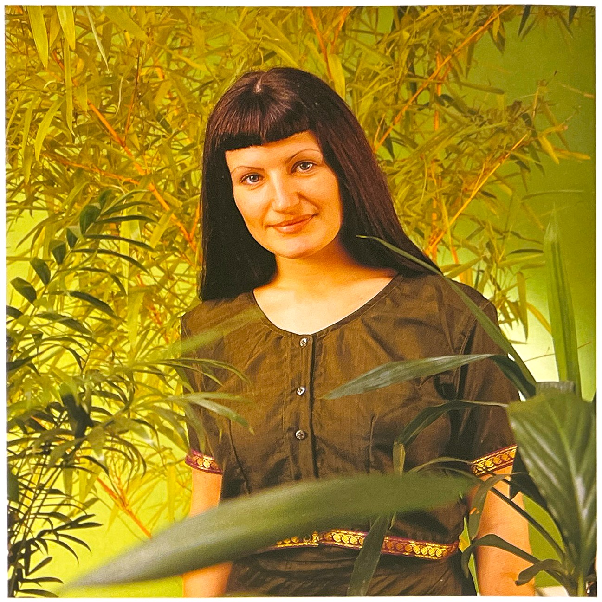어두운 녹색은 신체 내의 독성을 제거해 우리의 몸을 건강하게 해준다
터키옥색(Turquoise)[2]터키옥색은 모든 것 혹은 모든 사람에게가 아니라 그 자체에 집중하도록 하는 유일한 색상이다. 이 색상의 성향을 가진 사람들은 극도로 차분하고 안정되어 보이지만, 그런 침착한 겉모습 이면에 불같은 성격도 있다. 터키옥새 사람들은 그 상황에 적합한 것보다는 본인들이 느끼는 대로 말한다. 이들은 통찰력이 있는 사람들이기 때문에 매우 예리한 눈을 갖췄다. 이들은 골동품을 좋아하고, 대개 특가품을 산다. 자급자족 정신이 투철한 스타일이고, 필요한 경우에는 극도로 야심차기도 하다.
파트너를 선택하는 경우 매우 주저하는 경향이 있으며, 동시에 두 사람과 관계를 맺을 때도 있다. 이 색상은 매우 인간적인 색상이어서 공유하는 것을 매우 선호하며, 직장이든 시합이든 인간관계든 항상 화합하려고 애쓴다. 이들의 인생에 있어서 기본적인 동기는 인간관계이다. 이들은 일반적인 사람들의 가장 친한 친구이다. 이들은 혼자 있는 것을 싫어하며 가족과 함께하는 것을 매우 좋아한다. 파트너와 함께 있는 것이 이 색상의 성향을 지닌 사람들의 목표이다. 이들은 동물과도 친밀한 관계를 이룬다.
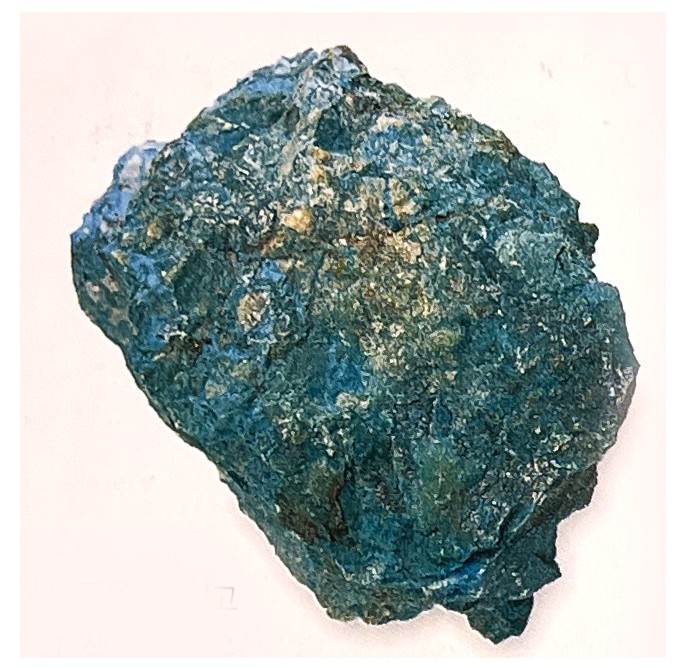터키옥색 돌을 가지고 다니면 그 색상의 평온함으로 인해 내면의 평안함을 얻을 수 있다.[2]
초록색으로 표현된 패션[4]연두 등의 노랑빛이 많이 보이는 초록은 봄을 시작하는 패션컬러로 많이 사용하고 있다. 라임과 에머랄드 빛의 푸른색이 감도는 초록은 시원한 느낌을 위한 봄과 여름패션에서 파랑기운의 현대적 이미지를 연출한다.
색이 짙어지면 깊은 정글의 색으로 엄숙함, 우아함, 중후함, 보수적인 이미지를 표현한다. 짙은 초록은 다른 짙은 색들과 함께 전통적 이미지의 패션에 많이 사용하며, 클래색 이미지의 패션 브랜드에서 베이지, 네이비, 빨강 혹은 자주와 함께 베이직 컬러로 사용하는 경우가 많다.
중간톤의 올리브 그린 계열의 색은 편안하고 친숙한 색으로 밝은 봄의 이미지와 달리 편안한 가을의 색으로 에콜로지 이미지를 연출할 수 있는 대표적인 색이라 할 수 있다.
녹색 인테리어[4]녹색은 차분하고 심리적으로 안정적인 효과를 주어 병원이나 학교, 작업장에 많이 사용한다. 밝은 녹색은 침실과 마루에 이상적이며, 중간톤의 녹색은 부엌과 식사공간의 색으로 적합하다. 어두운 녹색은 중후하고 클래식한 공간연출에 적합하다.
중간톤의 녹색 중 올리브 기린과 세이지 그린sage green은 자연적인 편안한 느낌으로 많이 사용되는 색이다. 보다 밝은 색조의 올리브와 세이지는장시간 편안함을 제공하며 다른 색들과 잘 혼합된다. 버건디burgundy, 루비, 사파이어 블루와 같은 어두운 녹새톤은 전통적이고 고전적인 이미지를 연출한다.
[참고문헌]:
[1] 컬러, 그 비밀스러운 언어 COLOR, 조앤 액스터트, 아리엘 엑스터트, 신기라 옮김, 시그마 북스, 2014.9.10.
[2] 몸과 마음을 치료하는 색채, 릴리안 베르너 본즈, 번역 한창환, 도서출판 국제, 2008.1,10.
[3] 색의 힘, 하랄드 브램, 번역 이재만, 일진사, 2010.5.20.
[4] 색채 기획을 위한 색이야기, 김문여 김봉섭 안희정, 교학연구사, 2011. 6.30.
[6] 색채 디자인 교과서, 문은배 지음, 길벗, 2010.12.28